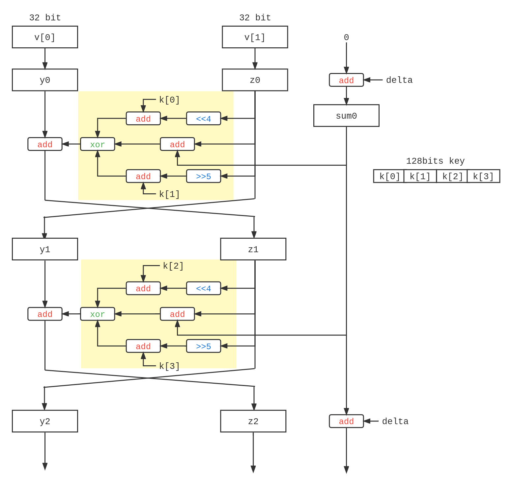
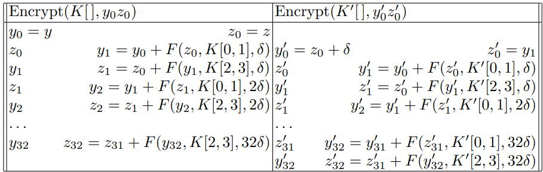
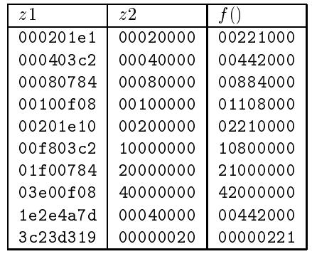

# TEA 算法
微型加密算法 (Tiny Encryption Algorithm, TEA) 是一种结构简单，计算容易的分组加密算法，由 Wheeler 和 Needham 在 1994 年提出 [1]。
TEA 是一种类似于 Feistel 结构的分组密码算法，采用了 64 轮的 Feistel 结构（不完全是）。TEA 使用 128bit 的密钥，对一个 64bit 的明文进行加密。

在 TEA 的轮函数中，使用了模加法等操作来提供非线性，同时使用了移位操作来保证密钥和明文混合。128 位的密钥长度可以防止密钥搜索攻击。
TEA 的密钥记为，在奇数轮，使用 作为轮密钥，在偶数轮则采用 作为轮密钥。奇数轮和偶数轮合并成一轮，这样总计是 32 次迭代。第 轮中，对块 进行下面的操作：
其中轮函数 定义为
轮函数中使用了一个 magic number 来避免利用各轮之间的相似性来进行攻击。它的值为 0x9e3779b9，这个数字是。实际上在逆向中，这个 magic number 常常说明 TEA 算法的存在。
Wheeler 和 Needham 在文章中指出 32 轮 Feistel 结构（16 次迭代）可能已经足够了，然而他们还是建议使用 64 轮（32 次）。
根据上面的描述，可以比较容易实现 TEA 的加密和解密。
void tea_encrypt(uint32_t* data, uint32_t* key) { | |
uint32_t sum = 0; | |
for (int i = 0; i < 32; i++) { | |
sum += DELTA; | |
// round function | |
data[0] += (data[1] << 4 + key[0]) ^ (data[1] + sum) ^ (data[1] >> 5 + key[1]); | |
data[1] += (data[0] << 4 + key[2]) ^ (data[0] + sum) ^ (data[0] >> 5 + key[3]); | |
} | |
} | |
void tea_decrypt(uint32_t* cipher, uint32_t* key) { | |
uint32_t sum = DELTA << 5; | |
for (int i = 31; i >= 0; i--) { | |
// round function | |
cipher[1] -= (cipher[0] << 4 + key[2]) ^ (cipher[0] + sum) ^ (cipher[0] >> 5 + key[3]); | |
cipher[0] -= (cipher[1] << 4 + key[0]) ^ (cipher[1] + sum) ^ (cipher[1] >> 5 + key[1]); | |
sum -= DELTA; | |
} | |
} |
# TEA 的安全性
# 基于 TEA 的哈希函数
在许多情况下，我们可以基于块密码来实现哈希函数。一个常见的压缩函数的形式是 Davies-Meyer 结构 [4]，其将前一个块的输出的哈希 和当前块的消息 作为输入，使用块密码加密函数，进行这样的计算：
然而对于 TEA 算法来说，注意轮函数结构：
如果我们同时翻转 和 的最高位 (MSB)，最终的结果依然是不变的 [5]。
Plaintext: 12345678 9abcdef0
Used Key: 11111111 22222222 33333333 44444444
Encrypted: 568a14a9 ed3f4fc2
Decrypted: 397acfac 8fb5aa99
Plaintext: 12345678 9abcdef0
Used Key: b1111111 c2222222 33333333 44444444
Encrypted: 568a14a9 ed3f4fc2
Decrypted: 397acfac 8fb5aa99
那么对于每个密钥，都有三个不同的密钥（翻转 和 的 MSB，翻转 和 的 MSB，MSB 全部翻转）与其等价。换句话说，TEA 的有效密钥长度只有 126 位。
当然，126 位的密钥长度某种意义上也是足够的了。但是这样的特性却导致了 TEA 不应该用于哈希函数的设计中 —— 在 Davies-Meyer 结构中，消息块作为密钥输入压缩函数，通过翻转固定的位，我们非常容易实现碰撞攻击。典型的一个例子是针对 Xbox 的攻击 [6]。
# 相关密钥攻击
相关密钥攻击 (Releated-Key Attack) 是这样的一个场景：攻击者尽管不知道初始密钥 的值，但是他知道某些密钥 是通过某种方式由初始密钥生成的（攻击者也不知道这些密钥的值），也能够观察特定的明文经过这些密钥加密的结果。在有这些知识的情况下，攻击者试图推断出初始密钥 的值。
例如一个不完善的加密算法，通过主密钥，通过， 这样的方法派生出其他密钥，那么这个体系可能就会受到相关密钥攻击。
Kelsey, Schneier 和 Wagner 等人提出了针对 TEA 的相关密钥攻击 [2]，可以通过 次选择明文攻击， 次相关密钥攻击和约 次离线计算后攻破 TEA 算法。
然而攻击的原理我没有完全理解（x
对于主密钥
相关密钥
对于一个特定的明文，构造，使用 加密 会比使用 加密 快半轮（一层 Feistel 结构）。

我们希望有这样的情况：我们找到一对 和，满足对于，有
满足上面的条件，也就需要的是
将右侧展开，有：
其中，也就是 和 低 5bit 加法的进位。
看 (1) 和 (2) 式的结构，也就是说只要对于所有的，都有，上面的 (1) 式就是满足的。
这样的概率是，对于随机的，重复 31 次的概率就是，大约是。
找到了这样的数据，我们可以采用 Rotational Related-key Attack 进行攻击。
接下来固定选择一个，生成 个不同的，将每一个 使用 加密得到密文。固定，生成 个不同的，将每一个 使用 加密得到密文。
接下来寻找，根据前面的推导，这也就意味着。根据概率，大约能够得到 组。每一组可以恢复 个不同的 和 取值。下面利用 Rotational Related-key Attack 可以恢复出可行的密钥取值。
Rotational Related-key Attack 这种攻击方式参考自论文 E. Biham, “New Types of Cryptanalytic Attacks Using Related Keys,”
Advances in Cryptology—EUROCRYPT ’93，然而我并没完全理解这种攻击方式。
希望以后能懂吧。
当然这种攻击方式在现实中可行性并不高，因此 TEA 算法在妥善使用（随机密钥，安全的分组密码工作模式，侧信道安全……）的情况下依旧是安全的 [3]。
# XTEA 和 Block TEA
为了避免上面提到的攻击方式，Needham 和 Wheeler 随后提出了扩展的 TEA 算法 (Extended TEA, XTEA)[7]。
XTEA 在 TEA 的基础上对轮函数进行了修改，用了更加复杂的密钥扩展方式。
XTEA 的轮函数如下：
实现如下：
void xtea_encrypt(uint32_t* data, uint32_t* key){ | |
uint32_t sum = 0; | |
for (int i = 0; i < 32; i++) { | |
data[0] += ((data[1] << 4) ^ (data[1] >> 5)) + data[1] ^ sum + key[sum & 3]; | |
sum += DELTA; | |
data[1] += ((data[0] << 4) ^ (data[0] >> 5)) + data[0] ^ sum + key[(sum >> 11) & 3]; | |
} | |
} | |
void xtea_decrypt(uint32_t* cipher, uint32_t* key){ | |
uint32_t sum = DELTA << 5; | |
for (int i = 31; i >= 0; i--){ | |
cipher[1] -= ((cipher[0] << 4) ^ (cipher[0] >> 5)) + cipher[0] ^ sum + key[(sum >> 11) & 3]; | |
sum -= DELTA; | |
cipher[0] -= ((cipher[1] << 4) ^ (cipher[1] >> 5)) + cipher[1] ^ sum + key[sum & 3]; | |
} | |
} |
同时，Needham 和 Wheeler 还提出了 Block TEA 算法，用于对更大的块进行加密。
Block TEA 的关键思想在于对于每一个字节进行一个混合 的操作：
这里的 实际上就是 XTEA 的轮函数。论文中提到，为了保证进行有效的混合操作，至少需要保证对每个字节进行 6 次 函数。建议的实现是对于每一个字节都要进行 次 操作。
具体的实现如下：
void block_tea_encrypt(uint32_t* data, uint32_t block_size, uint32_t* key) { | |
for (int i = 0, sum = DELTA; i < 6 + 52 / block_size; i++, sum += DELTA) { | |
for (int j = 0; j < block_size; j++) { | |
uint32_t z = data[(j - 1) % block_size]; | |
data[j] += ((z << 4) ^ (z >> 5) + z) ^ (key[(j ^ sum >> 2) & 3] + sum); | |
} | |
} | |
} | |
void block_tea_decrypt(uint32_t* cipher, uint32_t block_size, uint32_t* key) { | |
for (int i = 0, sum = DELTA * (6 + 52 / block_size); i < 6 + 52 / block_size; i++, sum -= DELTA) { | |
for (int j = block_size - 1; j >= 0; j--) { | |
uint32_t z = cipher[(j - 1) % block_size]; | |
cipher[j] -= ((z << 4) ^ (z >> 5) + z) ^ (key[(j ^ sum >> 2) & 3] + sum); | |
} | |
} | |
} |
加密较少的块的话可能 block TEA 会比正常的 TEA 慢，不过如果块比较多的话效率应该还是可以的。
# 针对 Block TEA 的攻击
针对 XTEA 的攻击主要也是相关密钥攻击，但是对其安全性的削弱相对来说不算很大。Saarinen 在 1998 年提出了针对 Block TEA 的攻击，可以在 234 次 CCA 攻击下恢复出密钥 [8]。
在 Block TEA 算法中，我们记函数，， 为明文。这里 并不是一个满射函数，也就是存在。下面是论文中给出的几个碰撞的例子。

这样，我们可以选择两个一样的密文，仅仅有其结尾不同，使得其解密结果分别对应了 函数的一对碰撞（这个估计得穷举一下）。获取到其密文之后，我们可以穷举用于加密这一字节的密钥。正确的密钥可以在解密过程中确定出来，通过 次穷举可以确定一个用来解密的密钥。接下来类似的，我们可以构造倒数第二位不同，分别对应了一对碰撞的密文，继续这个过程。重复四次就可以确定整个密钥，全过程需要 次 CCA 攻击。
# XXTEA
为了应对 Block TEA 面临的问题，Wheeler 和 Needham 提出了 Corrected Block TEA，也就是一般所说的 XXTEA。[9]
XXTEA 对轮函数进行了一定的修改，规避了针对 Block TEA 的攻击方式。具体的修改如下：
void xxtea_encrypt(uint32_t* data, uint32_t block_size, uint32_t* key) { | |
for (int i = 0, sum = DELTA; i < 6 + 52 / block_size; i++, sum += DELTA) { | |
for (int j = 0; j < block_size; j++) { | |
uint32_t z = data[(j - 1) % block_size]; | |
uint32_t y = data[(j + 1) % block_size]; | |
data[j] += ((z << 4) ^ (y << 2)) + ((y >> 3) ^ (z << 4)) ^ (sum ^ y) + (key[(j ^ sum >> 2) & 3] + sum); | |
} | |
} | |
} | |
void xxtea_decrypt(uint32_t* cipher, uint32_t block_size, uint32_t* key) { | |
for (int i = 0, sum = DELTA * (6 + 52 / block_size); i < 6 + 52 / block_size; i++, sum -= DELTA) { | |
for (int j = block_size - 1; j >= 0; j--) { | |
uint32_t z = cipher[(j - 1) % block_size]; | |
uint32_t y = cipher[(j + 1) % block_size]; | |
cipher[j] -= ((z << 4) ^ (y << 2)) + ((y >> 3) ^ (z << 4)) ^ (sum ^ y) + (key[(j ^ sum >> 2) & 3] + sum); | |
} | |
} | |
} |
在 XXTEA 提出之后，Saarinen 提出了一种针对 XXTEA 的 CPA 攻击 [8]。通过特定构造输入的明文，XXTEA 有一定的概率会导致一部分比特位没有翻转，由此大约有 的概率将 XXTEA 和一个安全的 PRP 进行区分，故而其不满足 CPA 安全。而后 Yarrkov 在 2010 年提出了一种基于差分密码分析的 CPA 攻击，能够在 次攻击中破解 XXTEA。
尽管这样，XXTEA 在合理的使用下依旧是一款轻量级的安全的加密算法。
# 参考资料
[1] Wheeler D J, Needham R M. TEA, a tiny encryption algorithm[C]//International workshop on fast software encryption. Springer, Berlin, Heidelberg, 1994: 363-366. https://link.springer.com/content/pdf/10.1007/3-540-60590-8_29.pdf
[2] Kelsey J, Schneier B, Wagner D. Related-key cryptanalysis of 3-way, biham-des, cast, des-x, newdes, rc2, and tea[C]//International Conference on Information and Communications Security. Springer, Berlin, Heidelberg, 1997: 233-246. https://www.schneier.com/wp-content/uploads/2016/02/paper-relatedkey.pdf
[3] https://crypto.stackexchange.com/questions/16186/is-tea-considered-secure
[4] https://en.wikipedia.org/wiki/One-way_compression_function#Davies–Meyer
[5] Kelsey J, Schneier B, Wagner D. Key-schedule cryptanalysis of idea, g-des, gost, safer, and triple-des[C]//Annual international cryptology conference. Springer, Berlin, Heidelberg, 1996: 237-251. https://link.springer.com/content/pdf/10.1007/3-540-68697-5_19.pdf
[6] Michael Steil. "17 Mistakes Microsoft Made in the Xbox Security System". Archived from the original on 16 April 2009.
[7] Roger M. Needham, David J. Wheeler (October 1997). Tea extensions. Computer Laboratory, University of Cambridge (Technical report).
[8] Saarinen M J. Cryptanalysis of block tea[J]. Unpublished manuscript, October, 1998.